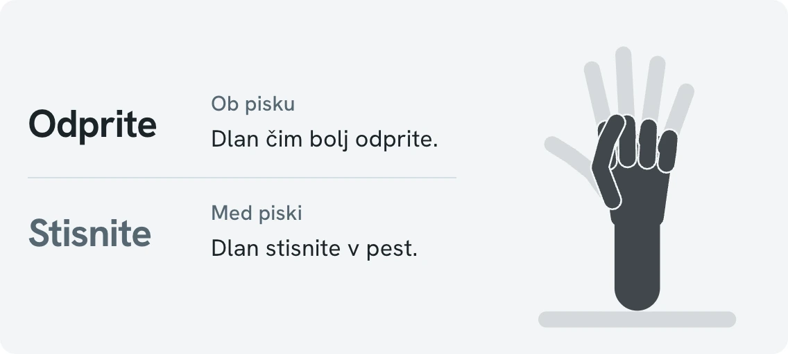
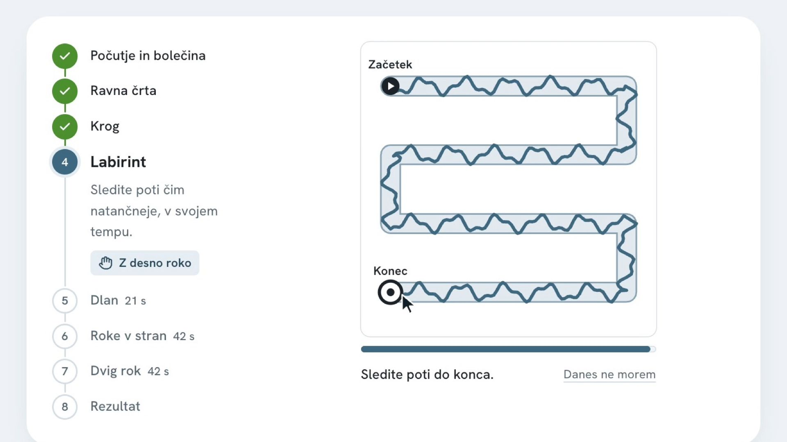
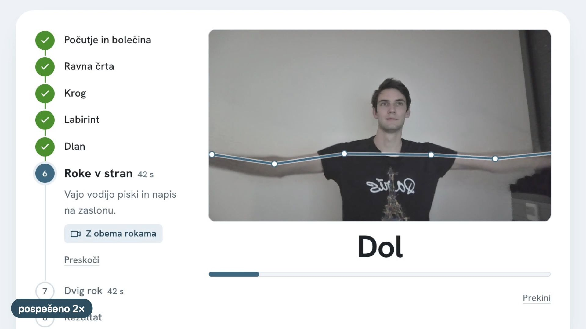
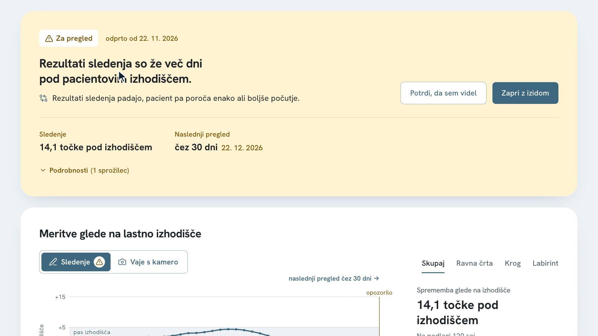

2prompt2fail na AdaHacku 2026
Okrevanje
doma
Ko roka začne popuščati, zdravnik to lahko opazi že pred naslednjim pregledom.
Izziv Ixtlan Team: skrb za paciente po odpustu iz bolnišnice
(sintetični podatki)
Ivan pravi,
da je dobro.
Ivan ima 71 let. Po možganski kapi je že 40 dni doma. Do naslednjega pregleda je še 30 dni.
Osredotočava se na okrevanje roke. Po kapi lahko počasno poslabšanje do pregleda ostane neopaženo.
- Za pacientapo kapi ali operaciji karpalnega kanala
- Za zdravnikaki pacienta spremlja med pregledi
»Kako se danes počutite, od 1 do 10?«
- 14. 10.7
- 15. 10.7
- 16. 10.7
- 17. 10.7
- 18. 10.7
- 19. 10.7
- 20. 10.7
- 21. 10.7
- 22. 10.7
- 23. 10.7
- 24. 10.7
- 25. 10.6
- 26. 10.6
- 27. 10.7
- 28. 10.7
- 29. 10.7
- 30. 10.7
- 31. 10.8
- 1. 11.7
- 2. 11.7
- 3. 11.7
- 4. 11.7
- 5. 11.7
- 6. 11.7
- 7. 11.7
- 8. 11.7
- 9. 11.6
- 10. 11.7
- 11. 11.7
- 12. 11.7
- 13. 11.7
- 14. 11.7
- 15. 11.7
- 16. 11.7
- 17. 11.7
- 18. 11.7
- 19. 11.7
- 20. 11.7
- 21. 11.8
- 22. 11.7
Ivan je 35 od 40 dni odgovoril »7«. Izmišljen pacient, sintetični podatki.
Njegova roka
pove drugače.
Novost je, da združiva oboje: kar pacient občuti in kar zmore roka. Zdravnik vidi tudi, kadar se to ne ujema.
- Pacient dobikratek samopregled in miren odziv.
- Zdravnik dobiopozorilo z razlogom, ko padejo meritve, se poslabša počutje ali poveča bolečina.
Trend meritev se primerja z lastnim izhodiščem, počutje in bolečina pa s prejšnjim tednom. Zgodovina je simulirana.
Pet minut doma, brez posebne opreme.
Dovolj je brskalnik. Samopregled s kamero traja približno pet minut, brez nje približno dve.
-
Kako se počutim
Dve subjektivni oceni.
Počutje- 1
- 2
- 3
- 4
- 5
- 6
- 7
- 8
- 9
- 10
Bolečina- 1
- 2
- 3
- 4
- 5
- 6
- 7
- 8
- 9
- 10
-
Kako natančna je roka
Tri igre sledenja s prstom ali miško.
-
Kolikšen gib zmore
Do tri vodene vaje pred kamero.

- ZajemOcene, časovno označena sled in točke gibanja. Video ostane na napravi.
- OcenaModel, naučen na sintetičnih podatkih, oceni sledenje, pravila pa gibe.
- ZapisVsaka seja se shrani. Vsaka vrsta meritve ima svoj trend.
Ivan pravi sedem. Roka vijuga.
Najprej oceni počutje in bolečino.
Nato s prstom ali miško sledi črti, krogu in labirintu.
Za prikaz je današnje sledenje namenoma slabše.

Kamera sledi gibu njegovih rok.
Dlan, roki v stran in dvig rok.
Na koncu Ivan izve mirno, a iskreno, brez točk in brez alarmov.
Namesto žive kamere je predvajan posnetek člana ekipe. Zaznava teče zares.

Sistem opozori. Odloči zdravnik.
Sistempokaže odstopanje in razlog. Ne postavlja diagnoze.
Zdravnikpresodi, ukrepa in zapre opozorilo z izidom.
En slab dan pri stabilnem pacientu praviloma ne sproži opozorila. Šteje potek skozi več dni.

Rešitev bi živela tam, kjer uporabniki že so.
Portal zVEM ima več kot 700.000 registriranih uporabnikov, zVEM+ pa uporablja več kot 3.600 zdravstvenih delavcev.
Pacient vidi svoj napredek. Svojec s pooblastilom vidi, ali samopregledi potekajo.
Meritve, trend glede na lastno izhodišče in opozorilo.
Bolnišnični tim in osebni zdravnik vidita opozorila, patronaža pa vidi, koga naj obišče.
- Pacient bi se vračal,ker je samopregled kratek, podoben igri in pokaže napredek.
- Svojec bi bil mirnejši,ker bi vedel, da samopregledi potekajo.
- Osebje bi prihranilo čas,ker bi najprej odprlo paciente, ki potrebujejo pozornost.
Predlog vpeljave. Povezava z zVEM in zVEM+ ter vloge svojcev, patronaže in osebnega zdravnika v prototipu še niso izdelane.
Naslednji pregled je čez 30 dni.
Zdravnik lahko ukrepa danes.
Danes, opozorilo22. december, pregled
- Že delujeCelotna pot od samopregleda do zdravnikove odločitve in 227 uspešnih samodejnih testov.
- Naslednji korakPrototip je raziskovalni, na sintetičnih podatkih. Sledijo meritve s prostovoljci, nato pilot z enim oddelkom.
Matevž in Primožekipa 2prompt2fail